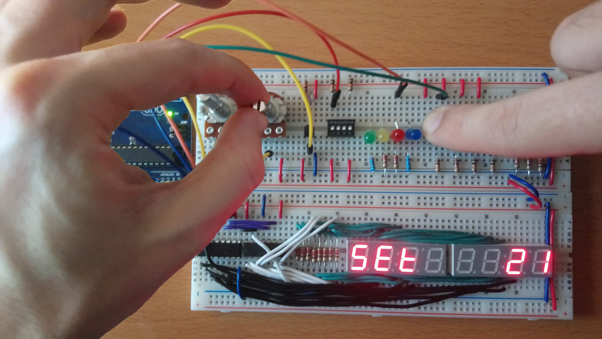
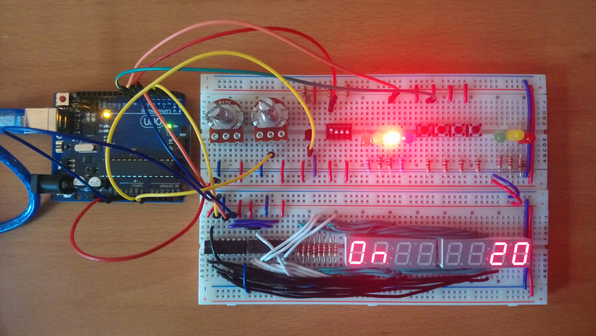
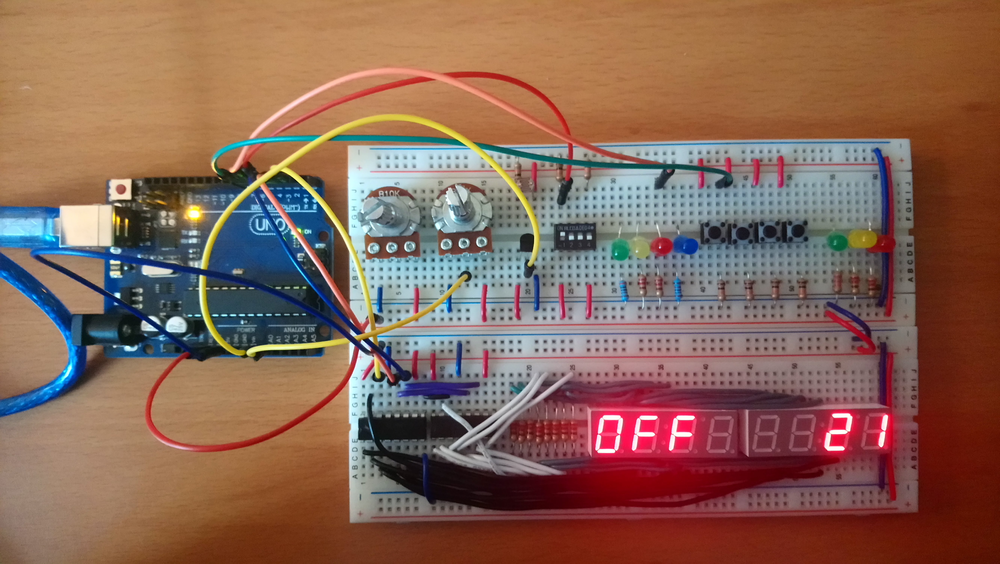
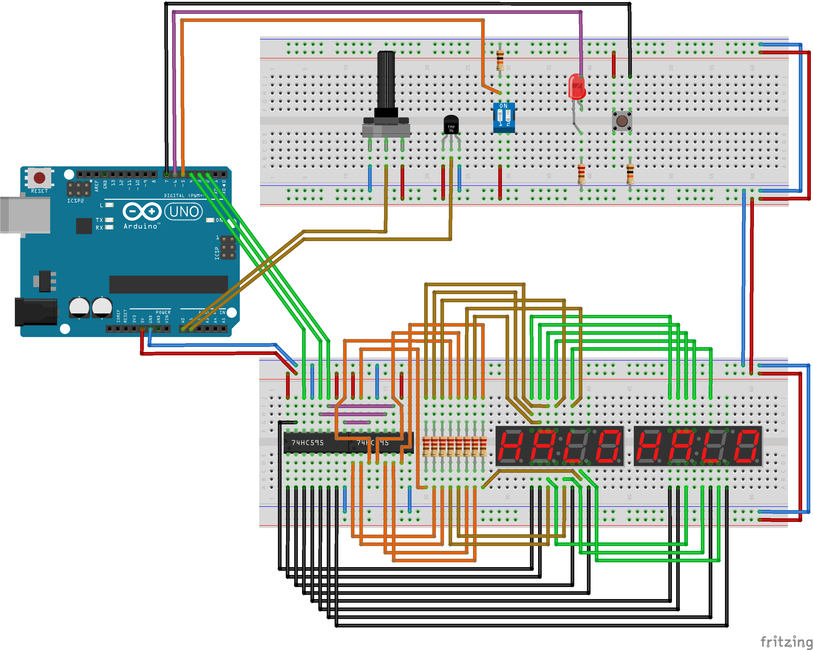

Worksheet Exercises
- thermostat
Task
We are going to create a thermostat that will read the current temperature and turn on a heater if it is below a threshold. Unlike the DAQ version of the program, we will add a potentiometer and set button to allow dynamic setting of the desired temperature.   Hardware Setup
The hardware setup is outlined as below:
 Fritzing schematic: apsc160_thermostat.fzz| Component | Count |
|---|---|
| Full Size Breadboard | 1 |
| Rotary Potentiometer (approx. 10 kOhm, Linear) | 1 |
| Temperature Sensor (TMP36 or LM35) | 1 |
| Slide DIP Switch (2 or 4 positions) | 1 |
| Tactile Switch | 1 |
| LED (5 mm Round) | 1 |
| Shift Register (74HC595, 14-DIP) | 2 |
| 4 digit 7-Segment LED Clock Display (Common Anode) | 2 |
| 220 Ohm Resistor | 9 |
| 10 kOhm Resistor | 2 |
Software Implementation
See the exercise on analog for temperature
conversion information. For the thermostat dial (potentiometer), we
linearly interpolate between two temperatures, MIN_TEMPERATURE_SETTING
and MAX_TEMPERATURE_SETTING.
For this program, we provide a library to handle the displayWrite(...)
functionality, since this is not part of the Arduino API. This library assumes
the exact hardware configuration as given in the Hardware Setup
above.
- Header: DisplayWrite.h
- Implementation: DisplayWrite.c
To add these files to your program in the Arduino IDE, download them somewhere known on your computer, and go to "Sketch > Add File..." and select both files. In Visual Studio with Visual Micro, right-click on the project and select "Add > Existing Item..." to add the both the header and source files.
thermostat.ino